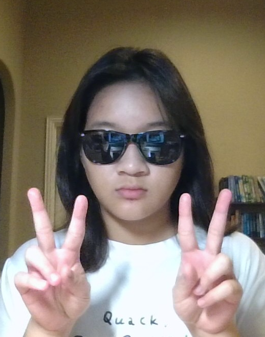
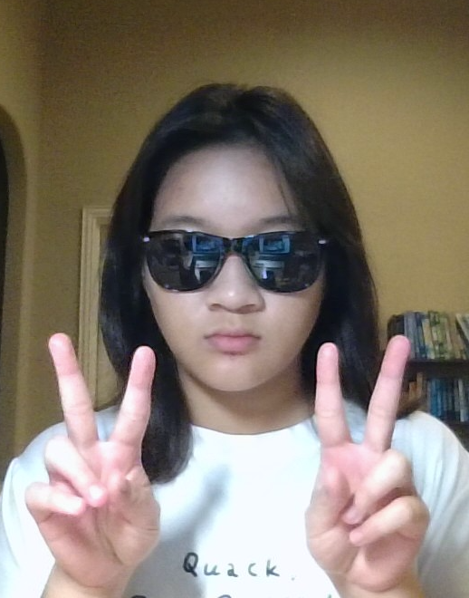

I'm currently attending the Texas Academy of Math and Science. My goal is to travel the world one day. My favorite color is purple (subtle foreshadowing). Here is a picture of me at Sam's Club, in Los Venice, and my dogs Teddy and Woody. Teddy is the one trying to steal the food.
I've been playing harp since I was 11. As of now, that makes 5 years! I love my harp and it is the best instrument to have ever existed—its beautiful sound is unparalleled (sorry everyone else). I'm very grateful to have the opportunity to learn how to play. I have a YouTube channel where I upload short tunes for others to enjoy. Bonus points if you recognize the song/piece!
I love to create. Here are a few pictures of artwork, sketches, photographs, and food I have created. Unfortunately, each picture is cropped.
Deep Learning, Harp, Science Olympiad, DECA, Art, Volunteer at the North Texas Food Bank
National Merit Semifinalist
x2 Texas All-State Harpist
x2 DECA State Conference
Coursera Machine Learning and Deep Learning Specialization Certificate
VASE 4 Rating
Rank: 3/501
GPA: 4.0
GPA: 4.0
.png) 
